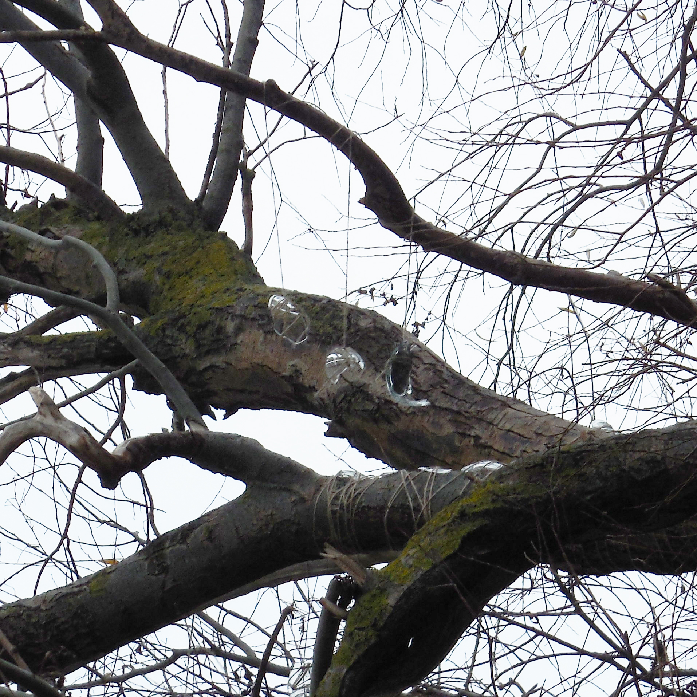
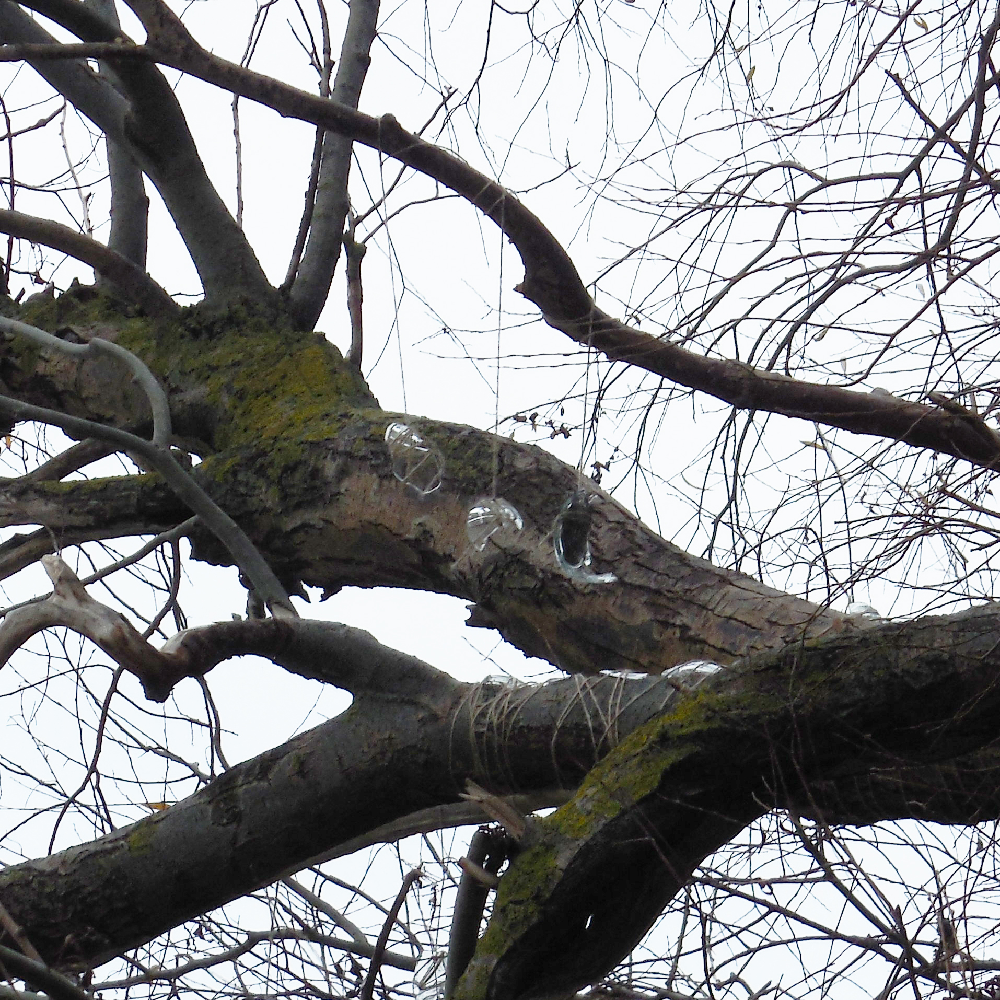
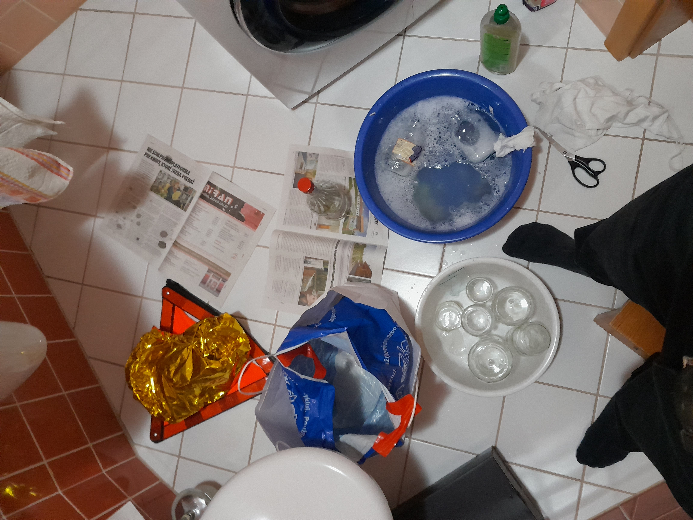

Protest je veľa vecí a chcem sa vyjadriť k aspektu, ktorý ku mne pri uvažovaní opakovane vystupoval.
Celkovo si myslím, že veľkou súčasťou konceptu protestu je rozpor medzi realitou a predpísanou realitou.
Keď niečo nie je správne a niečo smrdí. Potierame sa vonnými tyčinkami a tvárime sa, že je to pravda, pretože sa presviedčame, že nevidíme, alebo že vidieť nemusíme, nemali by sme, atď.
Dá sa však aj hovoriť pravdu, demonštrovať pravdu - vlastnou existenciou, vlastným hlasom. Existencia je afirmatívna.
Z filmu The Battle of Algiers mám veľa otvorených myšlienok, ale niečo, čo sa stále vracia - silný obraz nad rozmýšľaním je ‘otherworldly’ jačanie z Casbah. Stavili by som sa, že takto nejako by vyzerala nová farba alebo odcudzená pravda v ignorancii.
Niečo, čo vychádza z existencie (a širšom zmysle pravdy) nedokázali poprieť ani francúzski kolonizátori, ktorí boli presvedčení o ich spravodlivosti. Existencia sa nedá poprieť, ak by sa poprela, potom by už nebola.
Keď niekto klame o realite na takej verejnej škále ako v našej politickej scéne, predstavujem si, že pravda musí byť niečo, čo si telo pýta späť cez zvláštne sny, rozrušujúce zvuky a čudné oranžové blikotanie na okraji oka. ‘All-encompassing kindness’ sa iným v ich nevedomosti nemusí zdať ako niečo milé. Protest z tohto dôvodu často musí byť narušujúci. A ja som tentokrát investovali svoju energiu do ‘keeping counts’ a do zvláštnych snov na okraji oka.
Rozhodli som sa preto, nainštalovať v Pečnianskom lese oproti a v dohľade parlamentu do výšky stromov rôzne reflektívne kúsky, ktoré som vonku našli.
Pri príprave som najprv robili location scouting a zistili, kam sa dá z parlamentu dovidieť. Následne som hľadali reflektívne objekty po vonku. Nakoniec som v priebehu dvoch dní vytypovali 3 stromy, na ktoré som vyliezli a motúzom a trochou izolepy zaistili objekty.
